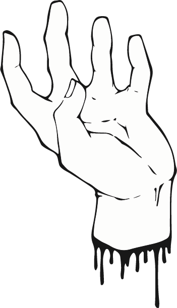

As a creative person, I am curious about everything.

As a creative person, I am curious about everything.
Drawing has always been a passion of mine.


I love visuals. In the wild I will have my phone out every 10 minutes to take a picture or video of something interesting.
Listening carefully to others, helps me in my work as a UX-designer. It helps me see the needs around me.
